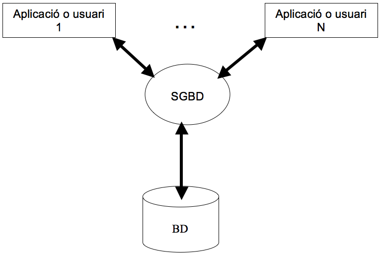

4. Sistema Gestor de Bases de Dades (SGBD)
4.1 Definició
Un SGBD és un conjunt de programes que proporcionen l’accés a la informació d’una base de dades. És la interfície entre la base de dades i els programes d'aplicació que accedeixen a aquesta.

L’SGBD que utilitzarem nosaltres serà MySQL, que, com molts altres, utilitza el llenguatge SQL per a interactuar amb les bases de dades.
4.2 Funcionament
Quan un usuari o aplicació vol fer alguna operació sobre la BD (consulta, inserció, modificació de dades...) envia a l’SGBD la petició (instrucció en SQL). El SGBD processa la petició SQL i accedeix a la BD (a través del sistema operatiu) per a consultar o fer els canvis corresponents en les dades. A continuació el SGBD torna a l’aplicació o usuari les dades sol·licitades (o bé informació de com han anat les accions d’inserció, modificació, etc).
4.3 Funcions
Un SGBD actua d’interfície entre les bases de dades i els usuaris per a realitzar les següents funcions:
- Definir les dades: el dissenyador de la BD pot crear les estructures de dades, les relacions entre elles, les restriccions d’integritat, etc. És a dir: crear les taules, vistes, etc., així com la posterior modificació i/o esborrat d’aquestes estructures.
- Manipular i consultar les dades: un usuari o aplicació pot inserir dades (en les taules creades), modificar-les, esborrar-les i, sobretot, consultar-les d’una manera senzilla i eficient.
- Garantir la privacitat de les dades: un administrador o usuari pot crear usuaris i assignar-los permisos per a consultar, modificar, esborrar... certes dades de la BD.
- Permetre la concurrència segura: amb les transaccions s’impedeix que, per exemple, dos usuaris actualitzen alhora un saldo bancari.
- Disposar de mecanismes de recuperació: còpies de seguretat.
Qüestió Veritat/Mentida
Realimentació
Mentida
Realimentació
Mentida
Realimentació
Veritat
Realimentació
Mentida
Activitat desplegable
Selecciona la funció del SGBD corresponent a cadascuna de les següents accions sobre una BD:
Llicenciat sota la Llicència Creative Commons Reconeixement NoComercial CompartirIgual 4.0